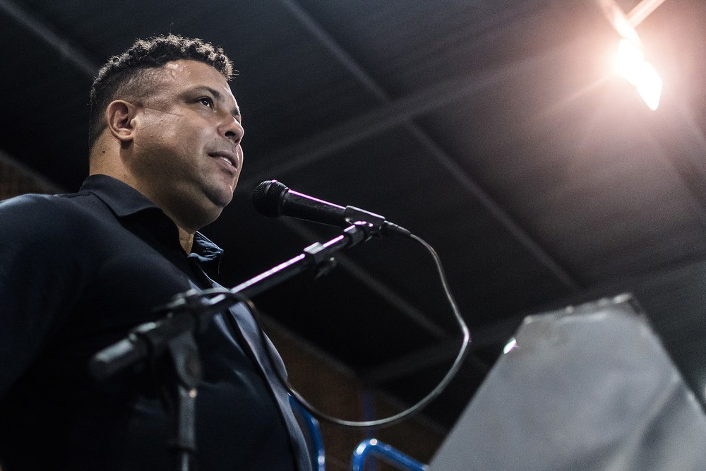

Ronaldo Fenômeno vem tendo um desafio novo a quase cada dia no Cruzeiro. Se nessa segunda precisou esperar por longas horas a aprovação no conselho deliberativo, nesta terça-feira continua a corrida contra o relógio para resolver o transfer ban que impede o clube de registrar atletas.
Ainda que não tenha assinado o contrato definitivo para adquirir 90% das ações da SAF, Ronaldo já vem aportando recursos no Cruzeiro para sobrevivência do futebol do clube. Chegará aos R$ 40 milhões em dívidas somente com transfer ban. Os impedimentos de agora chegam a quase R$ 14 milhões. O clube tem cerca de R$ 12,5 de dívida com o Independiente del Valle, do Equador, pelo acordo não cumprido da dívida feita pela compra do zagueiro Kunty Caicedo. Além disso, tem um débito que se aproxima dos R$ 1,5 milhão com o Atlético-AC pelo empréstimo do meia Careca.
Se realmente pagar os valores aos clubes na Fifa (Independiente del Valle) e CNRD (Atlético-AC), Ronaldo chegará aos R$ 40 milhões aportados, aproximando-se do valor inicial prometido em investimentos no Cruzeiro, que era de R$ 50 milhões.
Lembrando que há outros R$ 350 milhões, mas estes recursos, pelo acordo inicial, estão atrelados a "receitas incrementais". Será calculada a média das receitas do Cruzeiro entre 2017 e 2021. Caso a SAF não alcance o número determinado pela média, a partir de 2022, Ronaldo precisaria aportar investimentos.
No começo do ano, para registrar jogadores, Ronaldo precisou desembolsar cerca de R$ 26 milhões para realizar pagamentos de dívidas com três clubes que impediam o Cruzeiro de registrar jogadores.